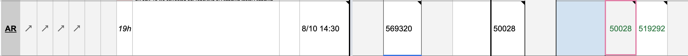
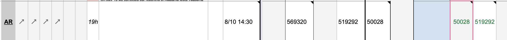
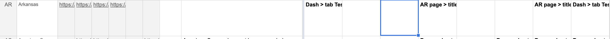
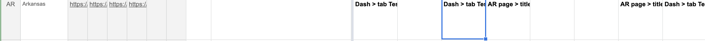

[AR] SVP Fixes; Move 3/6-7/3 values from Total PCR Tests (People) to Total Tests (PCR) since reporting units are unclear
Issue number 748
jesseandersonumd opened this issue on August 11, 2020 at 9:04 am
Labels Historical Data Backfill
State: Arkansas
Dates impacted: pre-7/3 (inclusive)
Issue: Prior to 7/3, CTP was capturing total tests in Total PCR Tests (People), after 7/3 we started reporting total tests in Total Tests (PCR). But, we are still reporting negative tests in people, even though negatives are reported in specimens. We think we should copy negative tests from people to Negative Tests (PCR) KEEP all values in Negative (People or Cases) and copy values to Negative Tests (PCR) to reflect the fact that negatives are reported in specimens as confirmed by outreach. We also think we should move total tests pre-7/3 to Total Tests (PCR) from Total PCR Tests (People). We should also flag that the AR total tests number is calculated by (positives cases (people) + negatives tests (specimens)). :(
Action Plan:
- [x] Start Capturing in Negative Tests (PCR)
- [x] Move Total PCR Tests (People), captured from 3/6-7/3 to Total PCR Tests (People) AR Moved Values from Total Tests PCR People to Total Tests PCR.txt
Comments
Moved 3/6 - 7/3 values from Total Tests PCR (People) to Total Tests (PCR) - the values moved are recorded in a txt CSV file in the issue description.
Interim changes: Negatives are now listed in both Negative Tests (People or Cases) and Negative Tests (PCR)
1/2: WS2 Before:  After: 
2/2: States Matrix Before:  After: 